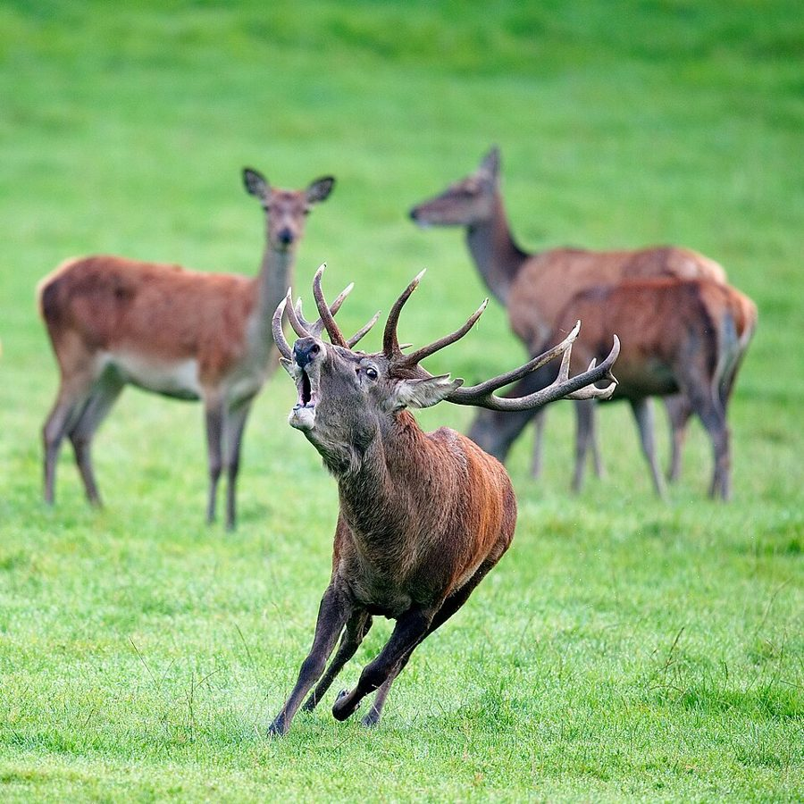
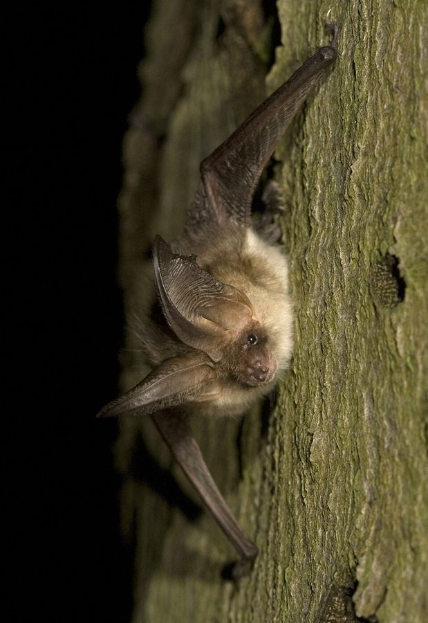

Dansk natur · 4 quizzer · 114 arter
NaturQuiz
Øv dig i at kende Danmarks træer, rovfugle, pattedyr og flagermus. Vælg en quiz — hver har en artsliste, en guide og tre sværhedsgrader.
-

TræQuiz
Danmarks hjemmehørende træer — kend dem på blade, bark, blomster og frugter.
-

RovfugleQuiz
Danmarks dagrovfugle — våger, høge, kærhøge, glenter, ørne og falke, siddende og i flugt.
-

PattedyrQuiz
Danmarks vilde pattedyr — hjorte, rovdyr, gnavere, spidsmus, sæler og hvaler.
-

FlagermusQuiz
Danmarks flagermus — museører, pipistreller, brunflagermus, langøre og bredøre.